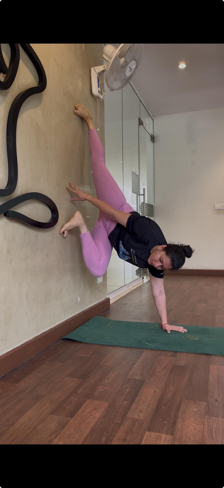
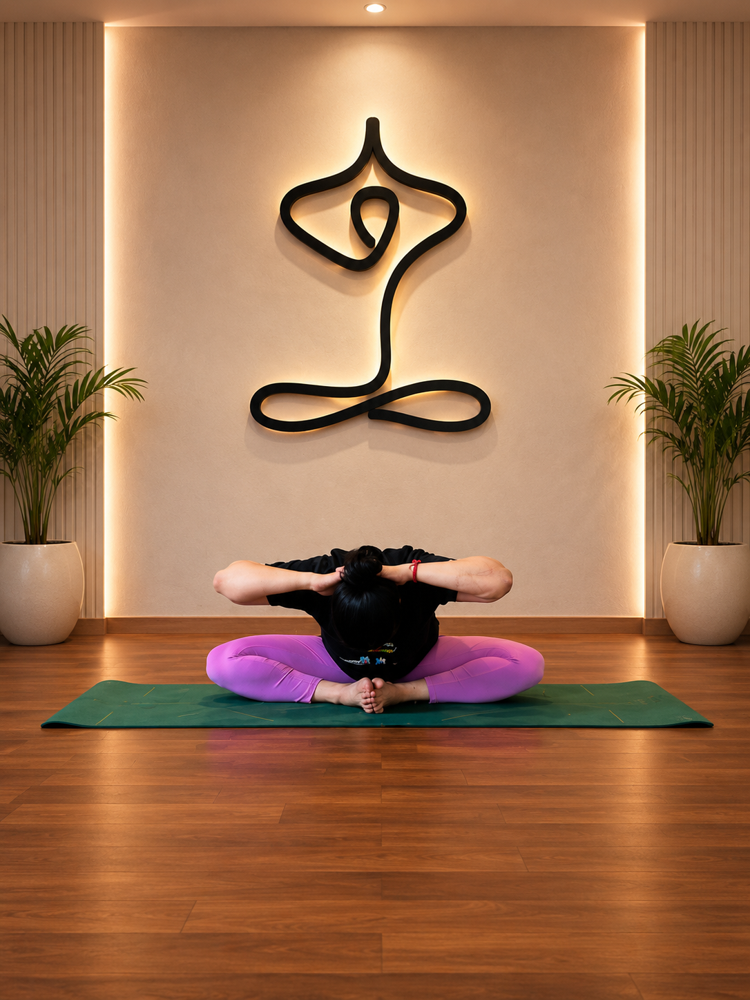
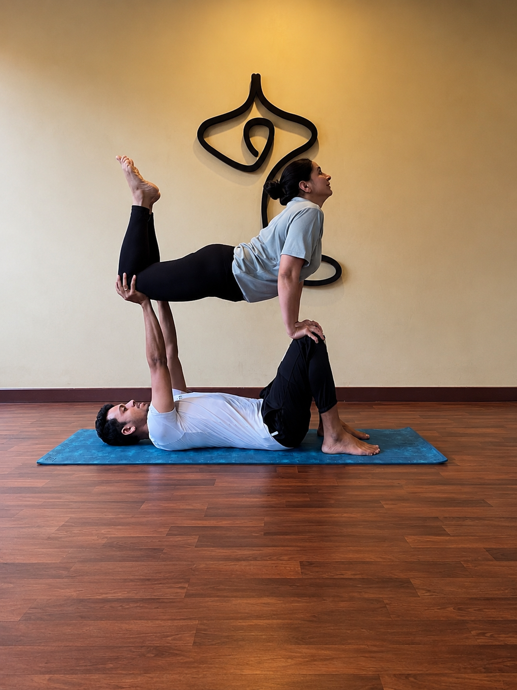
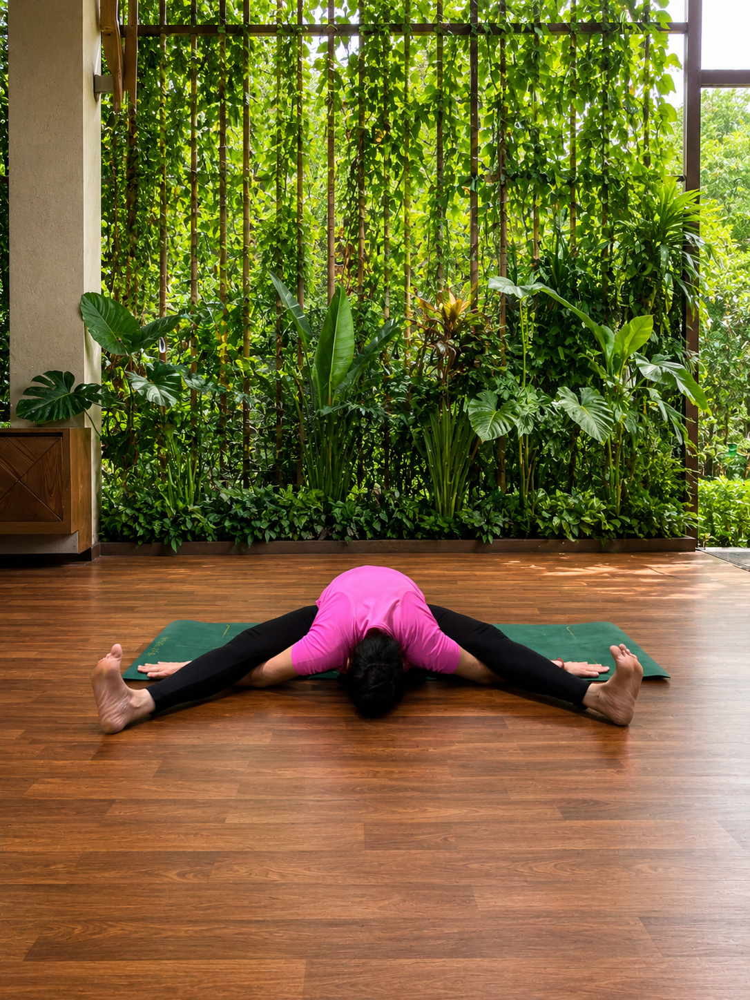
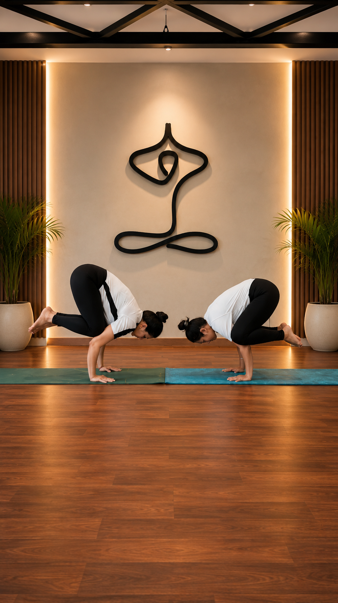
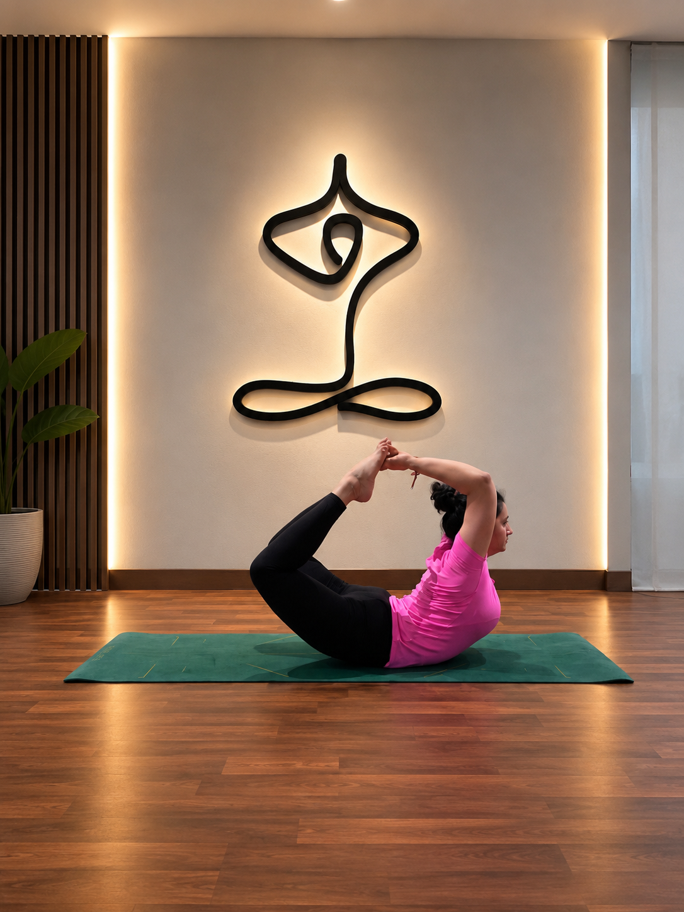
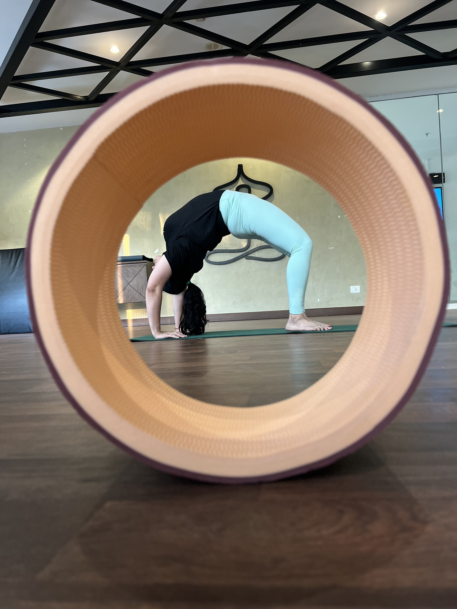
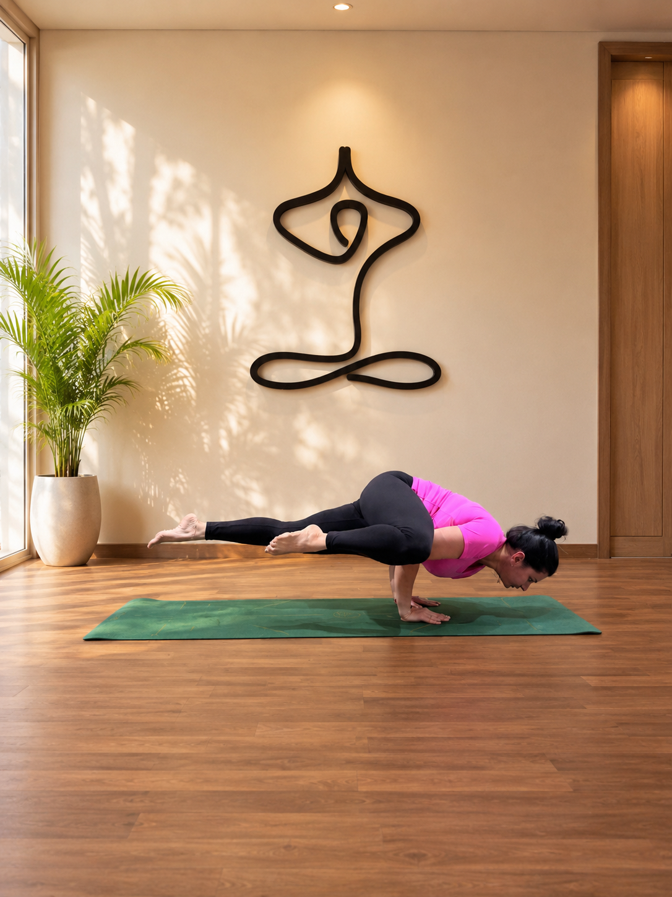
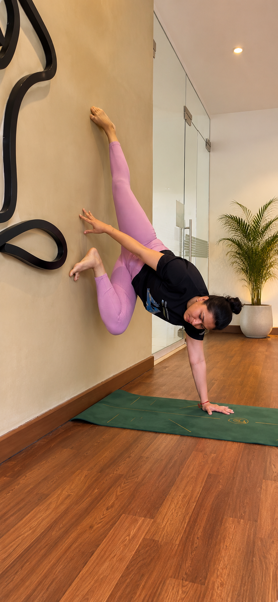

Strength
Build a body that
supports you.
⌁ WELCOME TO BUSY BUT BALANCED
Yoga is my pause in a busy world.
It keeps me grounded, grateful and going.
Build a body that
supports you.
Move with ease,
live with grace.
On & off the mat,
in everything you do.
Be present.
Be peaceful.
MY STORY
I'm Apurva Gupta — an engineering leader in fintech, a mother, a Kathak learner and a yoga practitioner based in Bengaluru.
Busy But Balanced is where I share real, consistent practice: creative flows, backbends, strength, mobility and progress built quietly.
BEYOND THE ASANA
For me, yoga is not only about creating a beautiful shape with the body. It is a practice of bringing the body, breath and mind into greater harmony — and carrying that awareness into everyday life.
This approach is rooted in yoga's wider tradition as an art and science of healthy living: movement matters, but so do breath, attention, rest, self-observation and the way we meet our day.
Strength, mobility, flexibility and creative movement that help the body feel capable and supported.
Conscious breathing as a bridge between physical practice and a quieter, more attentive mind.
Moments of meditation, reflection and inward attention — creating space beyond constant doing.
Relaxation, recovery and mindful pauses that make consistency more sustainable in a genuinely busy life.
Yoga is not just the hour I spend on the mat.
It is how I return to myself.
MY PRACTICE RHYTHM
I love advanced poses and creative flows, but the pose is never the entire story. My practice moves through strength, mobility, balance, backbends, breath and recovery.
The goal is not perfection. It is a more aware relationship with the body and mind — built with patience and consistency.
⌁ POSES. PRACTICE. PROGRESS.










Follow my journey and get your daily dose of
yoga, flow and inspiration.